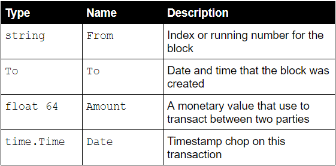

This workshop shows you how to create your own simple blockchain. In this tutorial you will be doing the following:-
- Understand various component of simple blockchain
- Link up all the components of the blockchain
- Define data structure of the blockchain
- Implement blockchain REST API end point for integration
- Allow multiple blockchain nodes connect to the master node for block synchronization
Pre-requisite
- Go Language
- Node JS
- Microsoft Visual Studio Code / Atom / GoLand
- Operating system: Linux/Windows/MacOS
Missing feature
- Wallet synchronization
- Sign transaction
- Verify transaction
- Transaction synchronization across nodes
- Transaction Pool
- Difficulty adjustment for mining (transaction verification)
- Consensus Algorithm - criteria to place the transaction into the digital ledger
- A smart contract virtual machine
- An implementation where the Miner's mine() function only grabs a group of the transactions, and not the entire pool. When the subset of transactions from the pool is included in the chain, they would need to be cleared from the pool, and synchronized across all miners.
- Route the blockchain-approved reward transactions through its own dedicated server. That way, not everyone can create transactions through the special blockchain wallet.
- Transaction fee for mining process.
- Handle 51% attack to prevent double spending
For all this missing feature please refer to the Javascript version
Install Node JS
- Download Node JS from the following hyperlink , select the correct platform based on your machine's operating system
- Install Node JS binaries
Install GoLang
- Download Golang from the following hyperlink , select the correct platform based on your machine's operating system
- Install Go Language binaries
Install Gomon (Source code watcher)
- Download Gomon npm libraries from the following hyperlink , select the correct platform based on your machine's operating system
- Install Gomon Node JS library
npm install -g go-mon
GoLang Dependencies
Get GoLang Web middleware - GIN
- Install GIN library to your project home directory, further feature please refer to GIN documentation (https://github.com/gin-gonic/gin)
go get github.com/gin-gonic/gin
Get GoLang Websocket - GORILLA
- Install GORILLA libary to your project home directory, further feature please refer to GORILLA documentation (http://www.gorillatoolkit.org/pkg/websocket)
go get github.com/gorilla/websocket
Get ripeMD160
- Install package ripemd160 implements the RIPEMD-160 hash algorithm.
go get golang.org/x/crypto/ripemd160
Get fast key value database (BoltDB)
- Install bolt package for fast key value database
go get github.com/boltdb/bolt
Features
The key features are the form of learning Go. All the tasks are challenging, and most come from the real open libraries as well as relevant papers or talks, however not difficult to complete. It will help you understand main parts of these works instead of browsing the huge code.
In my opinion the best way to learn coding is just coding.
There are currently 10 exercises, those works were done during the weekend of hackthon, so they are not seemingly that perfect, but I am sure, you will gain a lot if you finish the tasks.
How to install
This repo has no dependencies, so you can install by typing:
git clone https://github.com/gophergala/learn-Go-the-hard-way
or
go get -u github.com/gophergala/learn-Go-the-hard-way
How to use
You should complete the current exercise before you enter the next.
Each exercise is a git tag (from l1 to l10), you can check out the tag, and finish the task with tips.
Run go test, if you complete the task, and it will tell you whether you pass the task.
To get the tips, please run go run main.go, and follow the tips to modify main.go.
Printing
Formatted printing in Go uses a style similar to C's printf family but is richer and more general. The functions live in the fmt package and have capitalized names: fmt.Printf, fmt.Fprintf, fmt.Sprintf and so on. The string functions (Sprintf etc.) return a string rather than filling in a provided buffer.
You don't need to provide a format string. For each of Printf, Fprintf and Sprintf there is another pair of functions, for instance Print and Println. These functions do not take a format string but instead generate a default format for each argument. The Println versions also insert a blank between arguments and append a newline to the output while the Print versions add blanks only if the operand on neither side is a string. In this example each line produces the same output.
fmt.Printf("Hello %d\n", 23)
fmt.Fprint(os.Stdout, "Hello ", 23, "\n")
fmt.Println("Hello", 23)
fmt.Println(fmt.Sprint("Hello ", 23))
var x uint64 = 1<<64 - 1
fmt.Printf("%d %x; %d %x\n", x, x, int64(x), int64(x))
var x uint64 = 1<<64 - 1
fmt.Printf("%d %x; %d %x\n", x, x, int64(x), int64(x))
type T struct {
a int
b float64
c string
}
t := &T{ 7, -2.35, "abc\tdef" }
fmt.Printf("%v\n", t)
fmt.Printf("%+v\n", t)
fmt.Printf("%#v\n", t)
fmt.Printf("%#v\n", timeZone)
Append
Now we have the missing piece we needed to explain the design of the append built-in function. The signature of append is different from our custom Append function above. Schematically, it's like this:
x := []int{1,2,3}
x = append(x, 4, 5, 6)
fmt.Println(x)
Constant
Constants in Go are just that—constant. They are created at compile time, even when defined as locals in functions, and can only be numbers, characters (runes), strings or booleans.
type ByteSize float64
const (
_ = iota // ignore first value by assigning to blank identifier
KB ByteSize = 1 << (10 * iota)
MB
GB
TB
PB
EB
ZB
YB
)
Commentary
/*
Package regexp implements a simple library for regular expressions.
The syntax of the regular expressions accepted is:
regexp:
concatenation { '|' concatenation }
concatenation:
{ closure }
closure:
term [ '*' | '+' | '?' ]
term:
'^'
'$'
'.'
character
'[' [ '^' ] character-ranges ']'
'(' regexp ')'
*/
package regexp
If every doc comment begins with the name of the item it describes, you can use the doc subcommand of the go tool and run the output through grep. Imagine you couldn't remember the name "Compile" but were looking for the parsing function for regular expressions, so you ran the command,
go doc -all regexp | grep -i parse
Package names
When a package is imported, the package name becomes an accessor for the contents. After
import "bytes"
he importing package can talk about bytes.Buffer. It's helpful if everyone using the package can use the same name to refer to its contents, which implies that the package name should be good: short, concise, evocative. By convention, packages are given lower case, single-word names; there should be no need for underscores or mixedCaps. Err on the side of brevity, since everyone using your package will be typing that name. And don't worry about collisions a priori. The package name is only the default name for imports; it need not be unique across all source code, and in the rare case of a collision the importing package can choose a different name to use locally. In any case, confusion is rare because the file name in the import determines just which package is being used.
Semicolons
Like C, Go's formal grammar uses semicolons to terminate statements, but unlike in C, those semicolons do not appear in the source. Instead the lexer uses a simple rule to insert semicolons automatically as it scans, so the input text is mostly free of them.
The rule is this. If the last token before a newline is an identifier (which includes words like int and float64), a basic literal such as a number or string constant, or one of the tokens
break continue fallthrough return ++ -- ) }
Control Statements - If
The control structures of Go are related to those of C but differ in important ways. There is no do or while loop, only a slightly generalized for; switch is more flexible; if and switch accept an optional initialization statement like that of for; break and continue statements take an optional label to identify what to break or continue; and there are new control structures including a type switch and a multiway communications multiplexer, select. The syntax is also slightly different: there are no parentheses and the bodies must always be brace-delimited.
if x > 0 {
return y
}
f, err := os.Open(name)
if err != nil {
return err
}
d, err := f.Stat()
if err != nil {
f.Close()
return err
}
codeUsing(f, d)
Redeclaration and reassignment
An aside: The last example in the previous section demonstrates a detail of how the := short declaration form works. The declaration that calls os.Open reads,
f, err := os.Open(name)
This statement declares two variables, f and err. A few lines later, the call to f.Stat reads,
d, err := f.Stat()
Control Statements - For
The Go for loop is similar to—but not the same as—C's. It unifies for and while and there is no do-while. There are three forms, only one of which has semicolons.
// Like a C for
for init; condition; post { }
// Like a C while
for condition { }
// Like a C for(;;)
for { }
Short declarations make it easy to declare the index variable right in the loop.
sum := 0
for i := 0; i < 10; i++ {
sum += i
}
for key, value := range oldMap {
newMap[key] = value
}
for key := range m {
if key.expired() {
delete(m, key)
}
}
sum := 0
for _, value := range array {
sum += value
}
Switch
Go's switch is more general than C's. The expressions need not be constants or even integers, the cases are evaluated top to bottom until a match is found, and if the switch has no expression it switches on true. It's therefore possible—and idiomatic—to write an if-else-if-else chain as a switch.
func unhex(c byte) byte {
switch {
case '0' <= c && c <= '9':
return c - '0'
case 'a' <= c && c <= 'f':
return c - 'a' + 10
case 'A' <= c && c <= 'F':
return c - 'A' + 10
}
return 0
}
Type switch
A switch can also be used to discover the dynamic type of an interface variable. Such a type switch uses the syntax of a type assertion with the keyword type inside the parentheses.
var t interface{}
t = functionOfSomeType()
switch t := t.(type) {
default:
fmt.Printf("unexpected type %T\n", t) // %T prints whatever type t has
case bool:
fmt.Printf("boolean %t\n", t) // t has type bool
case int:
fmt.Printf("integer %d\n", t) // t has type int
case *bool:
fmt.Printf("pointer to boolean %t\n", *t) // t has type *bool
case *int:
fmt.Printf("pointer to integer %d\n", *t) // t has type *int
}
Array
Arrays are useful when planning the detailed layout of memory and sometimes can help avoid allocation, but primarily they are a building block for slices, the subject of the next section. To lay the foundation for that topic, here are a few words about arrays.
func Sum(a *[3]float64) (sum float64) {
for _, v := range *a {
sum += v
}
return
}
array := [...]float64{7.0, 8.5, 9.1}
x := Sum(&array) // Note the explicit address-of operator
Slices
Slices wrap arrays to give a more general, powerful, and convenient interface to sequences of data. Except for items with explicit dimension such as transformation matrices, most array programming in Go is done with slices rather than simple arrays.
var n int
var err error
for i := 0; i < 32; i++ {
nbytes, e := f.Read(buf[i:i+1]) // Read one byte.
n += nbytes
if nbytes == 0 || e != nil {
err = e
break
}
}
Two-dimensional slices
Go's arrays and slices are one-dimensional. To create the equivalent of a 2D array or slice, it is necessary to define an array-of-arrays or slice-of-slices, like this:
type Transform [3][3]float64 // A 3x3 array, really an array of arrays.
type LinesOfText [][]byte // A slice of byte slices.
text := LinesOfText{
[]byte("Now is the time"),
[]byte("for all good gophers"),
[]byte("to bring some fun to the party."),
}
Maps
Maps are a convenient and powerful built-in data structure that associate values of one type (the key) with values of another type (the element or value).
var timeZone = map[string]int{
"UTC": 0*60*60,
"EST": -5*60*60,
"CST": -6*60*60,
"MST": -7*60*60,
"PST": -8*60*60,
}
offset := timeZone["EST"]
delete(timeZone, "PST") // Now on Standard Time
Functions
Multiple return values
One of Go's unusual features is that functions and methods can return multiple values. This form can be used to improve on a couple of clumsy idioms in C programs: in-band error returns such as -1 for EOF and modifying an argument passed by address.
func nextInt(b []byte, i int) (int, int) {
for ; i < len(b) && !isDigit(b[i]); i++ {
}
x := 0
for ; i < len(b) && isDigit(b[i]); i++ {
x = x*10 + int(b[i]) - '0'
}
return x, i
}
Named result parameters
The return or result "parameters" of a Go function can be given names and used as regular variables, just like the incoming parameters.
func ReadFull(r Reader, buf []byte) (n int, err error) {
for len(buf) > 0 && err == nil {
var nr int
nr, err = r.Read(buf)
n += nr
buf = buf[nr:]
}
return
}
Defer
Go's defer statement schedules a function call (the deferred function) to be run immediately before the function executing the defer returns.
// Contents returns the file's contents as a string.
func Contents(filename string) (string, error) {
f, err := os.Open(filename)
if err != nil {
return "", err
}
defer f.Close() // f.Close will run when we're finished.
var result []byte
buf := make([]byte, 100)
for {
n, err := f.Read(buf[0:])
result = append(result, buf[0:n]...) // append is discussed later.
if err != nil {
if err == io.EOF {
break
}
return "", err // f will be closed if we return here.
}
}
return string(result), nil // f will be closed if we return here.
}
for i := 0; i < 5; i++ {
defer fmt.Printf("%d ", i)
}
Data
Allocation with new
o has two allocation primitives, the built-in functions new and make. They do different things and apply to different types, which can be confusing, but the rules are simple.
type SyncedBuffer struct {
lock sync.Mutex
buffer bytes.Buffer
}
p := new(SyncedBuffer) // type *SyncedBuffer
var v SyncedBuffer // type SyncedBuffer
Constructors and composite literals
Sometimes the zero value isn't good enough and an initializing constructor is necessary, as in this example derived from package os.
func NewFile(fd int, name string) *File {
if fd < 0 {
return nil
}
f := new(File)
f.fd = fd
f.name = name
f.dirinfo = nil
f.nepipe = 0
return f
}
return &File{fd, name, nil, 0}
Interfaces
Interfaces in Go provide a way to specify the behavior of an object: if something can do this, then it can be used here.
type Sequence []int
// Methods required by sort.Interface.
func (s Sequence) Len() int {
return len(s)
}
func (s Sequence) Less(i, j int) bool {
return s[i] < s[j]
}
func (s Sequence) Swap(i, j int) {
s[i], s[j] = s[j], s[i]
}
// Copy returns a copy of the Sequence.
func (s Sequence) Copy() Sequence {
copy := make(Sequence, 0, len(s))
return append(copy, s...)
}
// Method for printing - sorts the elements before printing.
func (s Sequence) String() string {
s = s.Copy() // Make a copy; don't overwrite argument.
sort.Sort(s)
str := "["
for i, elem := range s { // Loop is O(N²); will fix that in next example.
if i > 0 {
str += " "
}
str += fmt.Sprint(elem)
}
return str + "]"
}
Import for side effect
An unused import like fmt or io in the previous example should eventually be used or removed: blank assignments identify code as a work in progress.
import _ "net/http/pprof"
Concurrency
Goroutines
They're called goroutines because the existing terms—threads, coroutines, processes, and so on—convey inaccurate connotations. A goroutine has a simple model: it is a function executing concurrently with other goroutines in the same address space. It is lightweight, costing little more than the allocation of stack space. And the stacks start small, so they are cheap, and grow by allocating (and freeing) heap storage as required.
go list.Sort() // run list.Sort concurrently; don't wait for it.
func Announce(message string, delay time.Duration) {
go func() {
time.Sleep(delay)
fmt.Println(message)
}() // Note the parentheses - must call the function.
}
Channel
Like maps, channels are allocated with make, and the resulting value acts as a reference to an underlying data structure. If an optional integer parameter is provided, it sets the buffer size for the channel. The default is zero, for an unbuffered or synchronous channel.
c := make(chan int) // Allocate a channel.
// Start the sort in a goroutine; when it completes, signal on the channel.
go func() {
list.Sort()
c <- 1 // Send a signal; value does not matter.
}()
doSomethingForAWhile()
<-c // Wait for sort to finish; discard sent value.
Channels of channels
One of the most important properties of Go is that a channel is a first-class value that can be allocated and passed around like any other. A common use of this property is to implement safe, parallel demultiplexing.
type Request struct {
args []int
f func([]int) int
resultChan chan int
}
func sum(a []int) (s int) {
for _, v := range a {
s += v
}
return
}
request := &Request{[]int{3, 4, 5}, sum, make(chan int)}
// Send request
clientRequests <- request
// Wait for response.
fmt.Printf("answer: %d\n", <-request.resultChan)
Parallelization
Another application of these ideas is to parallelize a calculation across multiple CPU cores. If the calculation can be broken into separate pieces that can execute independently, it can be parallelized, with a channel to signal when each piece completes.
var numCPU = runtime.NumCPU()
func (v Vector) DoAll(u Vector) {
c := make(chan int, numCPU) // Buffering optional but sensible.
for i := 0; i < numCPU; i++ {
go v.DoSome(i*len(v)/numCPU, (i+1)*len(v)/numCPU, u, c)
}
// Drain the channel.
for i := 0; i < numCPU; i++ {
<-c // wait for one task to complete
}
// All done.
}
Panic
The usual way to report an error to a caller is to return an error as an extra return value. The canonical Read method is a well-known instance; it returns a byte count and an error.
var user = os.Getenv("USER")
func init() {
if user == "" {
panic("no value for $USER")
}
}
Recover
When panic is called, including implicitly for run-time errors such as indexing a slice out of bounds or failing a type assertion, it immediately stops execution of the current function and begins unwinding the stack of the goroutine, running any deferred functions along the way. If that unwinding reaches the top of the goroutine's stack, the program dies.
func server(workChan <-chan *Work) {
for work := range workChan {
go safelyDo(work)
}
}
func safelyDo(work *Work) {
defer func() {
if err := recover(); err != nil {
log.Println("work failed:", err)
}
}()
do(work)
}
What is Blockchain?
a digital ledger in which transactions are recorded chronologically and publicly. A public permanent append-only distributed ledger
For a cryptocurrency application, the ledger stores all transactions such as who transferred funds to who, similar to a bank ledger. Each set of transactions is represented as a block on the blockchain. A block can store multiple transactions.
View Video
Once a transaction has been committed (mined) to the blockchain (ledger), it can't be edited or removed. Also, all nodes on the blockchain network keep a replicated copy of the blockchain so there is no central place where the block chain is stored. When a new block is added to the blockchain, all nodes in the blockchain network are updated to have the newest version of the blockchain.
Every block in the chain is linked to the previous block by storing the hash value of the previous block, which creates a chain of blocks.
Instead of a central trusted authority like a bank, the blockchain network itself acts as the trusted authority because of its built in trust and security features. This eliminates the need for middle men such as banks and doesn't have a single point of failure. An attacker would have to take over a large segment of a blockchain network in order to compromise it whereas a bank robber only needs to rob a single bank to steal a lot of money.
Features
This cryptocurrency blockchain has many standard features of popular blockchains like Bitcoin ,Corda, HyperLedger and Ethereum. Many of these features are taken from the original Bitcoin whitepaper:
- Peer to peer secure blockchain server that accepts multiple connections through a published REST API
- Autonomous blockchain network with clients that can engage and disengage from the blockchain full blockchain replication among all the clients
- Timestamp on each block so they can be properly ordered
- Mining with a proof of work system for adding new blocks to the blockchain with a dynamic difficulty level and a financial incentive
- Transaction system for transferring funds between nodes secure wallets for storing a public-private key pair digital signatures (SHA-256) and payment verification
- Full suite of unit tests for every aspect of the system
Public and Private Key infrastructure
In blockchain public is the account address. Private key is used to transfer fund in other words is used to sign and verify the transaction. Private key is very important in blockchain it controls the funds.
Keeping your private keys secure
- Paper wallet
- Backup
- Hardware (Mcafee hardware wallet got hacked recently)
- Online wallet (Hosting app run away with all the consumer's wallet)
Proof of Work – Blockchain Mining
A blockchain's uses proof-of-work as a way to ensure only valid blocks are added to a blockchain and to prevent dishonest nodes from adding blocks. Due to the decentralized nature of a blockchain, any node has a copy of the entire blockchain and can theoretically, add another block. Using proof-of-work makes it computationally expensive to add corrupt blocks.
Difficulty Level
There are different proof-of-work systems, but our blockchain uses a similar proof-of-work system that Bitcoin uses, Hashcash. The goal is to generate a hash with a certain number of leading zeros, which is the difficulty level.
For example, if the difficulty level is three, then the miner needs to generate a hash with three leading zeros before being allowed to add a new block to the chain. The higher the difficulty level, the longer it will take to generate a hash that meets that criteria.
Nonce
The nonce value is iterated by one on every hash generation attempt. If the hash value satisfies the difficulty level, we save the nonce value in the block so other nodes can quickly validate the hash.
51% Attack
A 51% attack could result if a dishonest party could control more than 50% of the computer nodes on the network resulting in the ability to compute hashes faster than any other nodes on the network. This could result in corruption of the blockchain and double spending. The more nodes there are on the network, the less likely this is to happen.

Dynamic Difficulty Level
The blockchain uses a dynamic difficulty level by increasing the difficulty level if blocks are mined too quickly and decreasing the difficulty level if blocks are mined too slowly. The blockchain's default mine rate is 3000 milliseconds and the difficulty level is adjusted based on whether blocks are mined faster or slower than this value.
Our blockchain supports the idea of a dynamic difficulty level that changes over time, depending on how quickly blocks are added to the blockchain. Each block stores the difficulty level and the mine rate, which represents the rate at which blocks should be mined. Difficulty level will be adjusted by checking the difference between the current and previous blocks and increasing the difficulty level if the difference is below the target mine rate (to increase mining time) and decreasing the difficulty level if the difference is above the target mine rate (to decrease mining time).
Using Tour of Go to run through some of the important concepts in Golang
- Packages
- Imports
- function
- main func
- Short var declaration
- Type inference
- Type conversions
- Struct and slices
- Errors & Panic
- Interfaces
- Pointers and function
- Go routine (Concurrency)
Golang Notes
- Interfaces in Go are very different from, say, Java interfaces. You don't explicitly say a data type implements an interface; rather, your data types must implement all of the methods that the interface defines, and the compiler checks to see if assignments to variables of the interface type are valid.
type Animal interface {
Name() string
Bark()
}
type Dog struct {}
func (d *Dog) Name() string {
return "Dog"
}
func (d *Dog) Bark() {
fmt.Println("Woof!")
}
func main() {
var animal Animal
animal = &Dog{} // returns a pointer to a new Dog
fmt.Println(animal.Name()) // Dog
}
- Only = is the assignment operator.
- short variable declaration := , It is shorthand for a regular variable declaration with initializer expressions but no types:
- structs are passed into functions by value. That is, a copy of a structure is made when passing it into a function.
- if I want to pass a structure by reference, then I would instead use a pointer argument in the function definition, and use the addressof operator when calling the function.
- The reason why I would want to pass in a structure by reference is because either the structure I'm passing in is large, and it would be taxing on memory to pass it by value (unlikely) or if I want to make changes to the copy that I'm passing in (more likely).
- As a corollary to 3.), I should pass by value unless I have one of the reasons above to pass by reference.
- Appending to a slice
⋅⋅⋅ func append(s []T, vs ...T) []T - Go has pointers. A pointer holds the memory address of a value.
The type *T is a pointer to a T value. Its zero value is nil.
var p *int
The & operator generates a pointer to its operand.
i := 42
p = &i
The * operator denotes the pointer's underlying value.
fmt.Println(*p) // read i through the pointer p
*p = 21 // set i through the pointer p
This is known as "dereferencing" or "indirecting".
Unlike C, Go has no pointer arithmetic.
- sprintf is string formatting
- Format use for time.Time parsing RFC3339 = "2006-01-02T15:04:05Z07:00"
- For each read we pick a key to access, Lock() the mutex to ensure exclusive access to the state, read the value at the chosen key, Unlock() the mutex, and increment the readOps count.
Wait a bit between reads.
The fundamental object of the blockchain is the block, which represents an individual link in the blockchain. The blockchain stores the following properties:
- current hash (based on the timestamp, hash of previous block and transactions)
- hash of the previous block
- timestamp
- data to store (cryptocurrency transactions but can store generic data, as well)
- nonce value (for mining new blocks)
- difficulty value (for mining new blocks)
Genesis Block
The Genesis Block is the very first block in a blockchain – a way to start a blockchain. Since there's no preceding block, the genesis block uses hard coded dummy values for its previous hash value. This way, when the second block gets added to the blockchain, it will set the value of its previous hash to the hash of the genesis block. Since the genesis block is hard coded, we make it a static method of the Block class, so it's accessible without instantiating a Block object.
The Blockchain class is responsible for
- storing the list of blocks on the blockchain
- adding new blocks to the chain
- validating new blockschains
- replacing current blockchain with a new one (when synchronizing with other nodes).
What is a forks?
Every node on the network needs to have the same copy of the blockchain. So what happens when a new block gets mined on one node? Now the system has to replicate the new block to all the other nodes on the network so every node is in sync and has the same copy of the blockchain.
Since the blockchain needs to be replicated among all nodes in the network, the question arises – what happens if two nodes mine a block at the same time? This is when there's a fork in the blockchain and the system needs to reconcile the fork and merge all the new blocks.
When a fork occurs, some nodes will get replicated from node A and some will get replicated from node B which will create the following scenario:
We will use the rule that the longest chain will be accepted as the main chain. If there is a conflict between multiple nodes mining blocks at the same time, eventually, one chain will be longer and that will be accepted as the master blockchain. The other blocks that were mined on the shorter chain will be incorporated into the main blockchain.
The web application expose a series of JSON endpoints that will allow each node on the network to interact with the blockchain with its own HTTP server.
List of RPC API
JSON-RPC
JSON-RPC is a type of RPC protocol which uses JSON to encode requests and responses between client and server. The JSON-RPC v2.0 specification was released in 2010 and aims to provide a simple RPC mechanism.
POST /transact – add cryptocurrency transaction to the transaction pool
The code for the web application is in src/app/index.ts:
Peer-to-Peer Server
Each node on the blockchain network needs the ability to communicate with other nodes (peers) on the network in order to:
- Get an updated blockchain from its peers
- Broadcasting to other nodes when it has an updated version of the blockchain
- Each peer-to-peer server uses web sockets instead of HTTP to communicate with each node.
Blockchain synchronization between nodes is done by sending a synchronization message to other nodes as soon as new block is mined on any node. However, before a node replaces its blockchain from an update it received from one of its peers, it needs to check that the updated chain is longer than its current chain and that the new blockchain is valid (by validating its hashes). For new nodes that just join the network, they get an updated version of the blockchain from one of its peers.
In this workshop, you will write your blockchain in Google's Go Programming language. Define your own blockchain data structure, form your blockchain functionalities, create your transaction management, provide rest API and lastly blockchain data synchronisation. Let us all recap how a transaction works between two or more parties in a traditional banking transfer system vs blockchain.
Today's banking system (Remittance Cycle)

Q: What if the banking software crash?
A: Of course definitely there is a downtime and recovery process takes place in the bank. A customer won't able to perform fund transfer during that time. All customer have to wait until the system is fully up and operational. That leads to a single point of failure in my opinion.
Q: Looks like there is a lot of parties involved in between this wire transfer cycle?
A: Yes the seller's bank and the buyer's bank. Sometimes we might have a clearinghouse as well. With all these dependencies in place that is the reason why bank need 1-2 working days to clear the funds abroad.
Blockchain scenario (CryptoCurrency)
Shows how transaction happens on the blockchain network:-

All transactions record are publicly available. Every single transfer is recorded on the distributed ledger.
Q: Which technology has the most transparency if a side by side comparison is done?
A: Definitely not the banking system, if there are a fraud and insider job in the bank it has to wait till an audit exercise to discover as an incident. Therefore blockchain is an evolution. An effective e-commerce platform is overdue without an evolution and well-integrated payment technology with transparency.
Developing your own Blockchain
Define a data structure to hold all your blockchain data
A Block struct with the following members
A Blockchain struct with the following members

A Transaction struct with the following members

Requirement
- Define a type where is a list of the Block structure.
- Define a function NewBlock to instantiate new Block structure and return the structure. This function takes in three parameters.
- Define a function NewTranaction to instantiate a new Transaction structure and return the structure. This function takes in three parameters.
- Create a interface name it as Chain with the following implementation functions
- AddBlock(block *Block)
- GetLastBlock() *Block
- GetBlocks() Blocks
- IsChainValid() bool
- Define a function NewBlockchain to instantiate new Chain Interface and return the Blockchain structure. This function takes in no parameters. In fact, in this function, we need to create a genesis block and also add the genesis block into the blockchain list.
- Define a function that hashes every single block in the blockchain.
- Define a function consist of blocks within a blockchain structure. Take in one parameter the Block. Pointer concept to be tested here.
- Define a function that returns all the blocks
- Define a function that returns the last block from the blockchain
- Define a function that all the block in the chain is valid
- Define 6 rest API endpoint using GIN
- /blocks GET
- /pay POST with payload
- /new-wallet GET with query amount
- /wallets GET
- /is-chain-valid GET
- /ws GET - data synchronization
- Define new end point new-wallet, instantiate the wallet struct
- Store the wallet struct to a golang map
- Set the public key as the key
- Add an amount property to the wallet struct
- Initialize the amount
- Store the wallet struct as the map value
- Modify the pay end point with additional logic, validate both the from and to address against the wallet map. Check the To account with sufficient balance. Validate from account cannot send value to itself.
Step by step development
- Create a file name it as "blockchain.go" using an IDE (Atom/Visual Studio Code)
Full Source code
blockchain.go
package main
import (
"crypto/ecdsa"
"crypto/elliptic"
"crypto/rand"
"crypto/sha256"
"encoding/json"
"flag"
"fmt"
"log"
"net/http"
"os"
"sync"
"time"
"github.com/gin-gonic/gin"
"github.com/gorilla/websocket"
"golang.org/x/crypto/ripemd160"
)
// data structure of the block
type Block struct {
Index int `json:"index"`
Timestamp time.Time `json:"date"`
LastHash string `json:"prevHash"`
Hash string `json:"hash"`
Data interface{} `json:"transaction"`
nonce uint32
difficulty int
}
// list of blockchains
type Blocks []*Block
var mutex = &sync.Mutex{}
// interface consist all the function of the blockchain struct
type Chain interface {
AddBlock(block *Block)
GetLastBlock() *Block
GetBlocks() Blocks
IsChainValid() bool
ClearBlocks()
}
type BlockChain struct {
Blocks Blocks `json:"Blocks"`
}
type Transaction struct {
From string `json:"from"`
To string `json:"to"`
Amount float64 `json:"amount"`
Date time.Time
}
const version = byte(0x00)
const addressChecksumLen = 4
// Wallet stores private and public keys
type Wallet struct {
PrivateKey ecdsa.PrivateKey
PublicKey []byte
Balance float64
}
func NewBlock(index int, data interface{},
timestamp time.Time) *Block {
return &Block{
Index: index,
Timestamp: timestamp,
Data: data,
}
}
func NewTransaction(from string, to string, amount float64) *Transaction {
return &Transaction{
From: from,
To: to,
Amount: amount,
Date: time.Now(),
}
}
func (b *Block) createHash() string {
d := fmt.Sprintf("%v%v%v%v", b.Index, b.LastHash, b.Timestamp, b.Data)
h := sha256.New()
h.Write([]byte(d))
return fmt.Sprintf("%x", h.Sum(nil))
}
func NewBlockChain() Chain {
date, error := time.Parse(time.RFC3339, "2018-08-20T22:08:41+00:00")
if error != nil {
panic(error)
}
// create genesis block
genesisBlock := NewBlock(0, "Genesis Block", date)
genesisBlock.LastHash = "0"
genesisBlock.Hash = genesisBlock.createHash()
var blocks Blocks
blocks = append(blocks, genesisBlock)
return &BlockChain{
Blocks: blocks,
}
}
func (b *BlockChain) AddBlock(block *Block) {
block.LastHash = b.GetLastBlock().Hash
block.Hash = block.createHash()
b.Blocks = append(b.Blocks, block)
}
func (b *BlockChain) GetLastBlock() *Block {
return b.Blocks[len(b.Blocks)-1]
}
func (b *BlockChain) GetBlocks() Blocks {
return b.Blocks
}
func (b *BlockChain) ClearBlocks() {
emptyBlocks := make([]*Block, 0)
fmt.Println("empty blocks [%s]", len(emptyBlocks))
b.Blocks = emptyBlocks
}
func (b *BlockChain) IsChainValid() bool {
for i := 1; i < len(b.Blocks); i++ {
currentBlock := b.Blocks[i]
prevBlock := b.Blocks[i-1]
if currentBlock.Hash != currentBlock.createHash() {
return false
}
if currentBlock.LastHash != prevBlock.Hash {
return false
}
}
return true
}
// NewWallet creates and returns a Wallet
func NewWallet() *Wallet {
private, public := newKeyPair()
wallet := Wallet{private, public, 10000}
return &wallet
}
// GetAddress returns wallet address
func (w Wallet) GetAddress() []byte {
pubKeyHash := HashPubKey(w.PublicKey)
versionedPayload := append([]byte{version}, pubKeyHash...)
checksum := checksum(versionedPayload)
fullPayload := append(versionedPayload, checksum...)
address := Base58Encode(fullPayload)
return address
}
// HashPubKey hashes public key
func HashPubKey(pubKey []byte) []byte {
publicSHA256 := sha256.Sum256(pubKey)
RIPEMD160Hasher := ripemd160.New()
_, err := RIPEMD160Hasher.Write(publicSHA256[:])
if err != nil {
log.Panic(err)
}
publicRIPEMD160 := RIPEMD160Hasher.Sum(nil)
return publicRIPEMD160
}
func checksum(payload []byte) []byte {
firstSHA := sha256.Sum256(payload)
secondSHA := sha256.Sum256(firstSHA[:])
return secondSHA[:addressChecksumLen]
}
func newKeyPair() (ecdsa.PrivateKey, []byte) {
curve := elliptic.P256()
private, err := ecdsa.GenerateKey(curve, rand.Reader)
if err != nil {
log.Panic(err)
}
pubKey := append(private.PublicKey.X.Bytes(), private.PublicKey.Y.Bytes()...)
return *private, pubKey
}
var wsupgrader = websocket.Upgrader{
ReadBufferSize: 1024,
WriteBufferSize: 1024,
CheckOrigin: func(r *http.Request) bool { return true },
}
func wshandler(w http.ResponseWriter, r *http.Request, b Chain) {
conn, err := wsupgrader.Upgrade(w, r, nil)
if err != nil {
fmt.Println("Failed to set websocket upgrade: %+v", err)
return
}
//defer conn.Close()
go func() {
for {
_, message, error := conn.ReadMessage()
if error != nil {
fmt.Println("read: ", error)
return
}
time.Sleep(2 * time.Second)
fmt.Println("message:", string(message))
for _, bb := range b.GetBlocks() {
b, err := json.Marshal(bb)
if err != nil {
fmt.Println(err)
return
}
conn.WriteJSON(string(b))
}
}
}()
}
func main() {
fmt.Println("[ Starting Blockchain API Server ]")
// Instantiate a new blockchain
blockchain := NewBlockChain()
wallets := make(map[string]*Wallet)
r := gin.Default()
help := flag.Bool("help", false, "Display Help")
host := flag.String("h", "", "Host Address and Port")
dest := flag.String("d", "", "Dest MultiAddr String")
flag.Parse()
if *help {
fmt.Printf("This program demonstrates a simple blockchain\n\n")
fmt.Printf("Usage: Run './blockchain -h <hostname:port> -d <peershost:port>\n")
os.Exit(0)
}
blocksSize := len(blockchain.GetBlocks())
fmt.Println("Total block size : ", blocksSize)
fmt.Println("readsssss:", *dest)
if *dest != "" {
URL := "ws://" + *dest + "/ws"
var dialer *websocket.Dialer
conn, _, err := dialer.Dial(URL, nil)
//defer conn.Close()
go func() {
if err != nil {
fmt.Println(err)
return
}
for {
b, err := json.Marshal(blockchain.GetBlocks())
if err != nil {
fmt.Println(err)
return
}
conn.WriteJSON(b)
//i := Block{}
mutex.Lock()
var jsonStr = ""
err2 := conn.ReadJSON(&jsonStr)
if err2 != nil {
fmt.Println("read:", err2)
return
}
fmt.Println(jsonStr)
//var fromJson map[string]interface{}
var syncBlock Block
if err := json.Unmarshal([]byte(jsonStr), &syncBlock); err != nil {
panic(err)
}
fmt.Println(syncBlock)
childNodeBlocks := blockchain.GetBlocks()
foundAny := false
for _, v := range childNodeBlocks {
if v.Index == syncBlock.Index {
// Found!
fmt.Println(v.Index)
foundAny = true
break
}
}
fmt.Println(foundAny)
if foundAny == false {
newSyncBlock := NewBlock(len(childNodeBlocks), syncBlock.Data, time.Now())
blockchain.AddBlock(newSyncBlock)
}
mutex.Unlock()
}
}()
}
r.GET("/ws", func(c *gin.Context) {
wshandler(c.Writer, c.Request, blockchain)
})
r.GET("/new-wallet", func(c *gin.Context) {
var incomingWallet Wallet
wallet := NewWallet()
if c.BindQuery(&incomingWallet) == nil {
log.Println("====== Only Bind Query String ======")
log.Println(incomingWallet.Balance)
wallet.Balance = incomingWallet.Balance
}
a := wallet.GetAddress()
wallets[string(a)] = wallet
var jsonWallet struct {
PublicKey string `json:"publicKey"`
Amount float64 `json:"Amount"`
}
jsonWallet.PublicKey = string(a)
jsonWallet.Amount = wallet.Balance
c.JSON(http.StatusOK, gin.H{"wallets": jsonWallet})
})
r.GET("/wallets", func(c *gin.Context) {
c.JSON(http.StatusOK, gin.H{"wallets": wallets})
})
r.GET("/blocks", func(c *gin.Context) {
currentBlocks := blockchain.GetBlocks()
var interfaceSlice []interface{} = make([]interface{}, len(currentBlocks))
for i := range currentBlocks {
blockJson := &Block{
Index: currentBlocks[i].Index,
Timestamp: currentBlocks[i].Timestamp,
LastHash: currentBlocks[i].LastHash,
Hash: currentBlocks[i].Hash,
Data: currentBlocks[i].Data,
}
interfaceSlice[i] = blockJson
}
c.JSON(http.StatusOK, gin.H{"blocks": interfaceSlice})
})
r.POST("/pay", func(c *gin.Context) {
var err error
var incomingTransaction Transaction
if err = c.BindJSON(&incomingTransaction); err != nil {
c.JSON(http.StatusInternalServerError, gin.H{
"error": "json decoding : " + err.Error(),
"status": http.StatusInternalServerError,
})
return
}
fromA := incomingTransaction.From
toA := incomingTransaction.To
if fromA != toA {
fromW, present := wallets[fromA]
if present {
toW, present := wallets[toA]
if present {
if fromW.Balance >= incomingTransaction.Amount {
fromW.Balance = fromW.Balance - incomingTransaction.Amount
toW.Balance = toW.Balance + incomingTransaction.Amount
lengthOfChain := len(blockchain.GetBlocks())
xferTransaction := NewTransaction(fromA, toA, incomingTransaction.Amount)
transferBlock := NewBlock(lengthOfChain, xferTransaction, time.Now())
blockchain.AddBlock(transferBlock)
c.JSON(http.StatusOK, gin.H{"transferValidity": blockchain.IsChainValid()})
return
}
}
}
}
c.JSON(http.StatusInternalServerError, gin.H{"error": "invalid"})
})
r.GET("/is-chain-valid", func(c *gin.Context) {
c.JSON(http.StatusOK, gin.H{"chain-validity": blockchain.IsChainValid()})
})
fmt.Println("Hostname and Port ", dest)
var finalPortAssignment = "localhost:3005"
if *host != "" {
finalPortAssignment = *host
fmt.Println("default Hostname and Port ", finalPortAssignment)
}
r.Run(finalPortAssignment)
}
base58.go
package main
import (
"bytes"
"math/big"
)
var b58Alphabet = []byte("123456789ABCDEFGHJKLMNPQRSTUVWXYZabcdefghijkmnopqrstuvwxyz")
// Base58Encode encodes a byte array to Base58
func Base58Encode(input []byte) []byte {
var result []byte
x := big.NewInt(0).SetBytes(input)
base := big.NewInt(int64(len(b58Alphabet)))
zero := big.NewInt(0)
mod := &big.Int{}
for x.Cmp(zero) != 0 {
x.DivMod(x, base, mod)
result = append(result, b58Alphabet[mod.Int64()])
}
// https://en.bitcoin.it/wiki/Base58Check_encoding#Version_bytes
if input[0] == 0x00 {
result = append(result, b58Alphabet[0])
}
ReverseBytes(result)
return result
}
// Base58Decode decodes Base58-encoded data
func Base58Decode(input []byte) []byte {
result := big.NewInt(0)
for _, b := range input {
charIndex := bytes.IndexByte(b58Alphabet, b)
result.Mul(result, big.NewInt(58))
result.Add(result, big.NewInt(int64(charIndex)))
}
decoded := result.Bytes()
if input[0] == b58Alphabet[0] {
decoded = append([]byte{0x00}, decoded...)
}
return decoded
}
utils.go
package main
// ReverseBytes reverses a byte array
func ReverseBytes(data []byte) {
for i, j := 0, len(data)-1; i < j; i, j = i+1, j-1 {
data[i], data[j] = data[j], data[i]
}
}
Setup Flutter
Please follow the setup on the following website
- Git clone the flutter wallet app from the following Github repository.
- Implement the transfer functionality using http POST calling the blockchain master node's rest API /pay.
- List all the blocks calling the http GET /blocks on the history tab of the wallet app.
- Run wallet app
flutter run